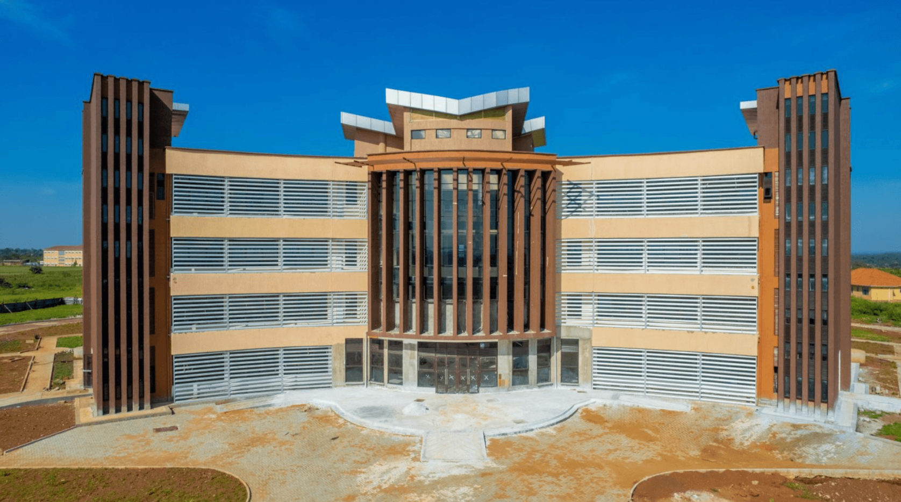
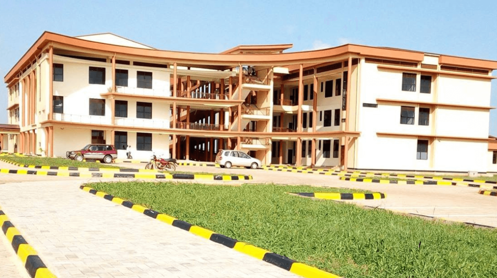

A glimpse of our university
Library & University Gallery
Scenes from the wider Lira University learning community.

Main university building University staff
University staff
Teaching hospital University leadership
University leadership University Librarian
University LibrarianPhotographs are sourced from publicly available Lira University pages and are included for coursework demonstration. This is a university gallery, not a claim that every image depicts the library interior.